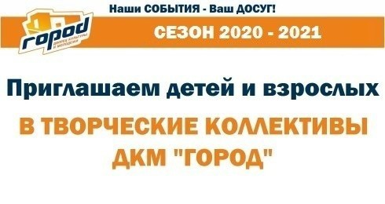

НАБОР В ТВОРЧЕСКИЕ КОЛЛЕКТИВЫ ДЛЯ ДЕТЕЙ И ВЗРОСЛЫХ

ДВОРЕЦ КУЛЬТУРЫ И МОЛОДЕЖИ «ГОРОД»
Псковская, 1
ЗАПИСЬ ПО ТЕЛЕФОНУ 555-045 / 77-40-53
СЕЗОН 2020-2021
ТВОРЧЕСКИЕ КОЛЛЕКТИВЫ ДЛЯ ДЕТЕЙ И ПОДРОСТКОВ
Группа игровой хореографии «ЛУЧИКИ»
Возраст: 2-3 года
Ритмопластика, ознакомление с простейшими танцевальными ритмами, приобретение
начальных двигательных навыков, игровой стрейчинг, подвижные и музыкальные игры.
Руководитель: Горшкова Екатерина Сергеевна.
Запись по тел. 77-40-53, 555-045
ДЕТСКИЙ ТЕАТР БАЛЕТА (подготовительная студия)
Возраст: 5-7 лет
Детский игровой танец, основы классической хореографии.
Руководитель: Виноградова Софья Вадимовна.
Организационное собрание 2 сентября в 18.30
Школа современного танца «ТИП-ТОП»
Возраст: 4-5 лет
Детский современный танец с элементами гимнастики, акробатики,
музыкальные упражнения, танцевальные игры.
Руководитель: Агафонова Наталья Леонидовна.
Организационное собрание 5 сентября в 18:30
Школа-студия «Танцующий город»
Возраст: 4-5 лет
Основы хореографии.
Руководители: Теленина Ольга Владимировна, Чамова Надежда Игоревна.
Запись по тел. 77-40-53, 555-045
Хореографическая студия «КОНФЕТТИ»
Возраст: 5-9 лет
Детский игровой танец, основы классического танца, растяжки,
развитие танцевальности, музыкальности и артистизма.
Руководитель: Щавлева Ульяна Вадимовна.
Организационное собрание 4 сентября в 19:00
Детский хореографический коллектив «КруАСаны»
Возраст: 3-14 лет
Современный эстрадный танец, классический танец,
общефизическая подготовка, стретчинг (растяжка).
Руководитель: Коннова Анна Сергеевна.
Организационное собрание 7 сентября в 19:00
Хореографический ансамбль «ЛАДУШКИ»
Возраст: 7-14 лет
Детский игровой танец, основы народно-сценического танца,
элементы сценического владения оружием.
Руководитель: Гончаров Юрий Алексеевич
Организационное собрание 3 сентября в 19:00
Школа современной хореографии «Амадей»
Возраст: 6-16 лет
Верхний и нижний брейк.
Руководитель: Петров Иван Викторович
Организационное собрание 10 сентября в 18:30
Студия декоративной росписи «АЛЕНЬКИЙ ЦВЕТОЧЕК»
Возраст: от 4 лет и старше
Традиционная и современная роспись по дереву, стеклу, гипсу.
Руководитель: Саранчукова Марина Владимировна.
Организационное собрание и мастер-класс 19 сентября в 14:00
Детская студия изобразительного искусства «КОЛОРИТ»
Возраст: 4-8 лет
Руководители: Боровых Людмила Сергеевна, Хизуненко Мария Сергеевна
Рисунок, живопись, композиция, декоративно-прикладное творчество,
скрапбукинг, аппликация, фитодизайн, декупаж, работа с соленым тестом.
Организационное собрание 6 сентября в 11:00
Мини-школа «Учимся, играя»
Возраст: 5-6 лет
Математические ступеньки, развитие речи, окружающий мир,
развитие творческих способностей, развивающие игры.
Руководители: Филиппова Людмила Михайловна, Филиппова Елена Михайловна.
Организационное собрание 5 сентября в 11:00
Студия лепки «ГЛИНЯНОЕ ЧУДО»
Возраст: 4-12 лет
Поделки из глины: лепка, обжиг, роспись.
Руководитель: Кузьмина Наталья Анатольевна.
Организационное собрание 3 сентября в 18:00
Студия декоративно – прикладного творчества
Возраст: от 7 лет и старше
Основы декоративно-прикладного искусства, цветоведение, рисунок, композиция,
роспись по дереву, стеклу, коллаж, батик.
Руководитель: Шангурова Татьяна Александровна.
Организационное собрание 6 сентября в 12:00
Студия эстрадного вокала «МИКСТ»
Возраст: 5-6, 10-11 лет
Эстрадный вокал, постановка дыхательного и голосового аппарата,
работа с микрофоном.
Руководитель: Балюк Анастасия Дмитриевна.
Приём по результатам прослушивания.
Запись по тел.77-40-53, 555-045.
Студия изобразительного искусства
Возраст: 9-17 лет
Рисунок, живопись, композиция.
Руководители: Богданова Галина Сергеевна и Городецкая Александра Павловна
Организационное собрание 2 сентября в 18:00
Студия ЧИРЛИДИНГА
Возраст: 6-17 лет
Освоение базовых элементов гимнастики и акробатики
в сочетании с различными танцевальными стилями.
Руководитель: Линник Екатерина Юльевна.
Организационное собрание 26 августа в 18:00
Школа ирландского танца «SAMHAIN»
Возраст: 8-17 лет
Традиционные ирландские танцы в мягкой и жёсткой обуви, сольные и групповые.
Руководитель: Семенова Анна Сергеевна.
Организационное собрание 4 сентября в 18:30
Студия «ДИЗАЙНЕРСКИЕ ШТУЧКИ»
Возраст: 9-12 лет
Скрапбукинг, декупаж, квилинг, игрушки из фетра,
новогодние композиции, фитодизайн.
Организационное собрание 6 сентября в 12:00
Театральная студия «МАСКИ-ФАН»
Возраст:
- 5-10, 11-14 - группа пластической миниатюры
- от 7 лет группа актерского мастерства и чтецкого искусства
(к собранию подготовить небольшое стихотворение, басню
или просто рассказать о себе)
Актерское мастерство, сценическое движение, ритмопластика,
сценическая речь и художественное чтение.
Руководитель: Павленко Людмила Константиновна.
Организационное собрание 3 сентября в 18:30
Студия «Театр юного зрителя»
Возраст: 7-14 лет, от 14 лет и старше
Формирование актёрских навыков, развитие сценической речи.
К собранию необходимо подготовить басню и стихотворение.
Руководитель: Егоров Иван Иванович.
Организационное собрание 4 сентября в 17:00
К собранию необходимо подготовить басню или стихотворение.
Театральная студия «ПРИНЦ ГАМЛЕТ»
Возраст: 5-10 лет
Развитие речевой техники, сцендвижение, этюды,спектакли.
Наставник: Калинин Евгений Николаевич
Организационное собрание 5 сентября в 16:00
Театральная студия «ДРУГ ГОРАЦИО»
Возраст: 11-16 лет
Развитие речевой техники, сцендвижение, этюды,спектакли.
Наставник: Калинин Евгений Николаевич
Организационное собрание 5 сентября в 18:00
ТВОРЧЕСКИЕ КОЛЛЕКТИВЫ ДЛЯ ВЗРОСЛЫХ
Студия изобразительного искусства «ТВОРЧЕСТВО»
Руководители: Богданова Г.С., Захарова Н.В.
Организационное собрание 7 сентября в 18:30
Студия декоративно – прикладного творчества и лаковой миниатюры
Руководитель: Шангурова Татьяна Александровна.
Организационное собрание 6 сентября в 12:00
Студия "УНИВЕРСАЛ"
Фитнес, пилатес. Для пенсионеров - группы общей физической подготовки.
Руководитель: Линник Екатерина Юльевна.
Запись по тел. 77-40-53, 555-045
Театр огня и света «FALKOR»
Руководитель: Сытенко Ксения Владимировна.
Организационное собрание 8 сентября в 19:30
Школа ирландского танца «SAMHAIN»
Руководитель: Семенова Анна Сергеевна.
Организационное собрание 4 сентября в 18:30
Студия «Традиционная кукла»
Руководитель: Олонцева Ольга Михайловна.
Организационное собрание 2 сентября в 19:00
Студия декоративной росписи «АЛЕНЬКИЙ ЦВЕТОЧЕК»
Руководитель: Саранчукова Марина Владимировна.
Организационное собрание 19 сентября в 14:00
Студия актерского мастерства «ВТОРАЯ ЛИНИЯ»
Руководитель: Соломонова Анастасия Борисовна.
Организационное собрание 9 сентября в 19:00
_____________________________________________________________________
ДВОРЕЦ КУЛЬТУРЫ И МОЛОДЕЖИ «ГОРОД»
Псковская, 1
ЗАПИСЬ ПО ТЕЛЕФОНУ 555-045 / 77-40-53
СЕЗОН 2020-2021
 Порядок функционирования ДК "ГОРОД" с 15 ноября 2021 года
Порядок функционирования ДК "ГОРОД" с 15 ноября 2021 года Вся информация о творческой жизни Дворца культуры представлена в нашей официальной группе в ВКонтакте
Вся информация о творческой жизни Дворца культуры представлена в нашей официальной группе в ВКонтакте Основные правила безопасности дома и на улице
Основные правила безопасности дома и на улице